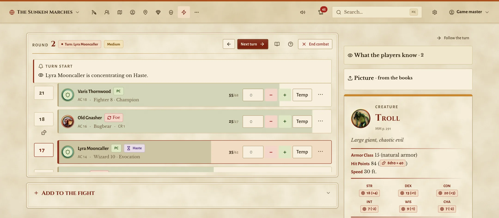
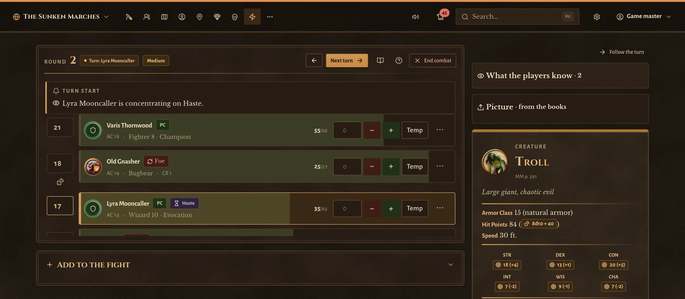
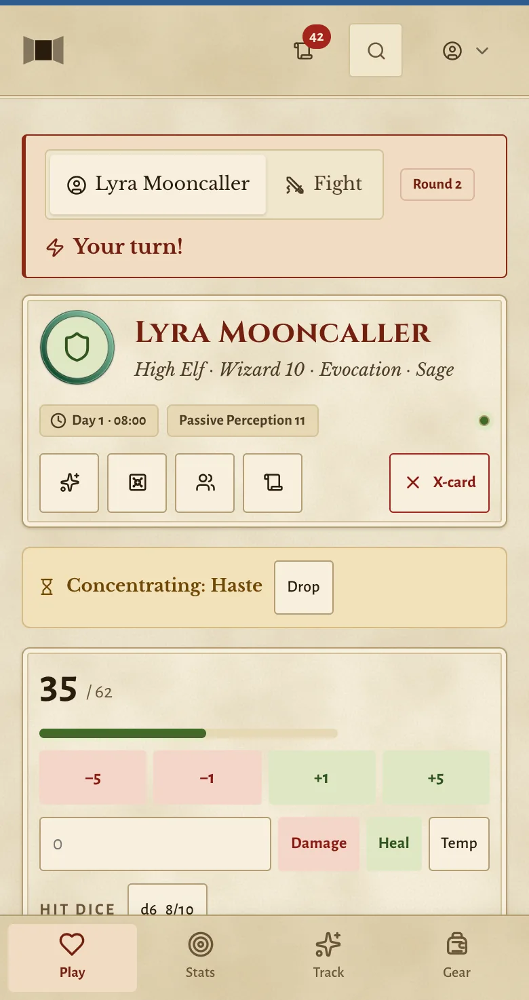
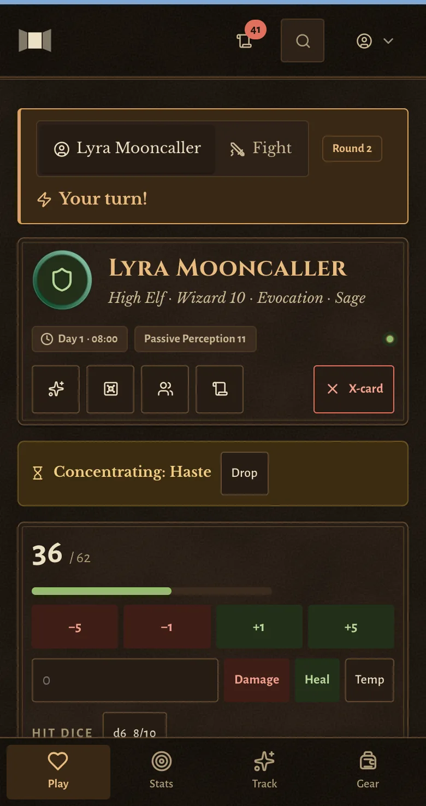
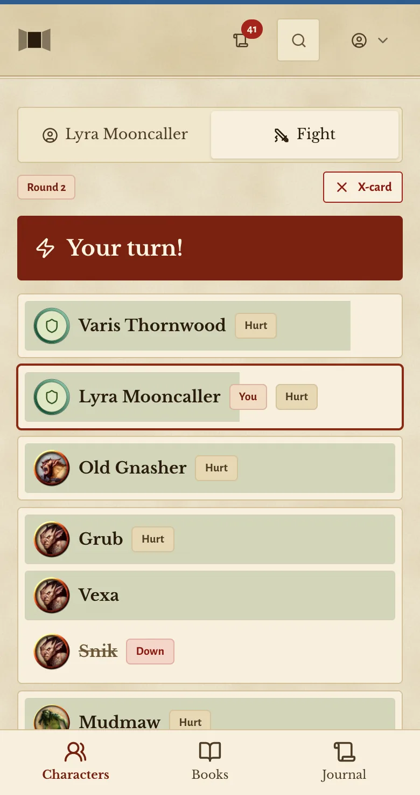
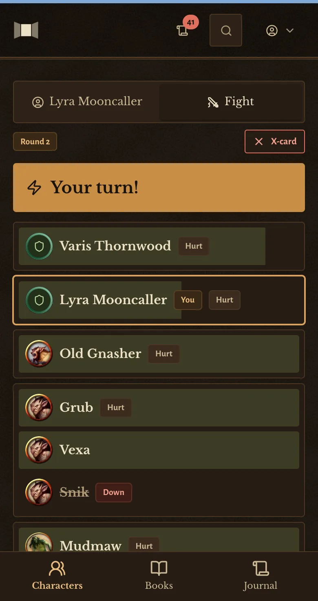
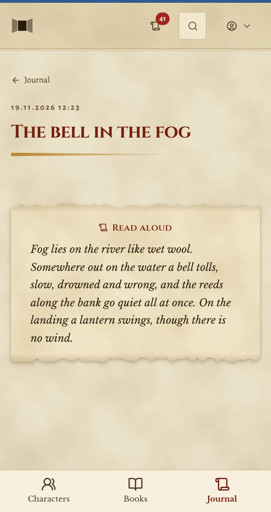
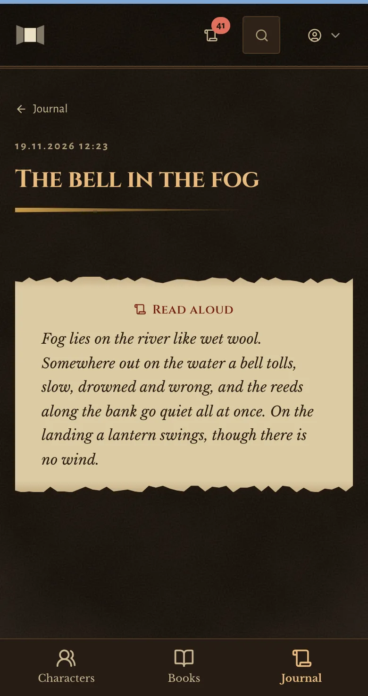
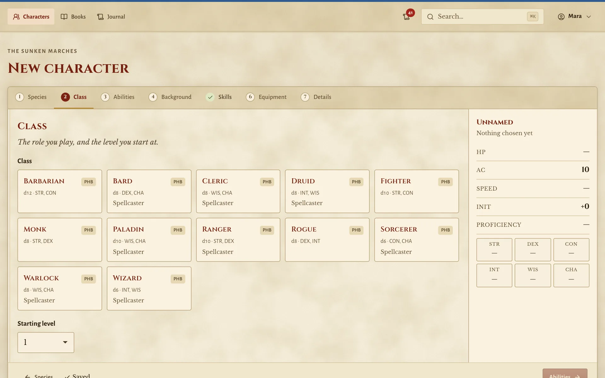
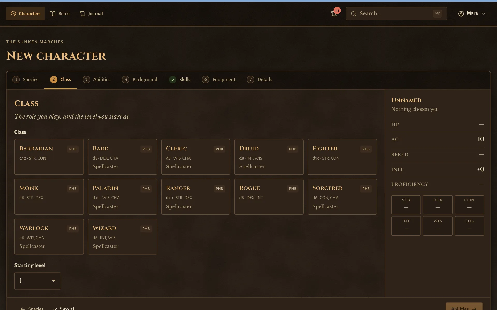

What the design became. Pages 01–16 were drawn in September 2026, before there was an app; they keep the reasoning, and each now opens with a note on what changed. This page shows the screens as they are built (2026-11-14), and the parts of Paravent that no page ever drew.
About the pictures
They are the website's screenshots of a demo table, made by website/shots.py: our own world and texts, creatures from the System Reference Document. They are taken in the Tome theme (parchment, oxblood accent, book fonts), which a table switches on; Paravent's own look uses the neutral colours of page 08. The pictures follow this page's Light / Dark switch.
Replaces the rail of pages 02, 04 and 10
The shell
No rail was built. Every role gets the same sticky top bar, which the screens below all show.
Sections: Table, Characters, Encounters, Combat, Worlds, Books. Each remembers the last page read in it, and logging in again carries on where you left off.
To the right: the sound desk, the log with a badge for new entries, search (⌘K), a settings gear for the gamemaster (players, glossary, translations, backups, themes, the corpus check), and the user menu: DE / EN (the units follow the language), sun / moon (the device decides until chosen), dice sounds on / off.
Role colour: a thin edge on top of the bar, orange for the gamemaster, blue for a player.
Phone: at 760px the sections get their own row, at 640px they become icon-over-label tabs. A player on a phone gets a compact top row and a bottom bar (Characters, Books, Journal); the sheet and the wizard bring bars of their own.
Links to a heading land below the bar at any height: ui.js measures it into --bar-h.
The order on the left, the selected creature's statblock in a side panel on the right (372px from 1024px, stacked below on narrower screens). There is no reference drawer.


Rows: a round token (the table's picture, else one from the image folder, else the kind's disc), tinted green for a friend and red for a foe. The row's background is its hit point bar. One initiative per turn group, an amount field with −, +, Temp and a … menu.
Pills: friend / foe (switching the whole group), conditions with their rounds, concentration naming the spell, a skull for the dead, Hidden, a druid's Wild Shape form, a concentration save still owed.
Round head: Begin while initiative is rolled, then ← and Next; the difficulty rated live from who still stands; a lair turn on 20; the rules screen, How it works, End.
The statblock fights: every attack has Attack / Adv / Dis, and the roll waits under “Attacks to resolve” for Hit (damage counted against the target's defences) or Miss. Breath weapons roll once and ask each target for its save; a creature's spells are cast with its slots. A druid in Wild Shape fights with the beast's actions.
Around it: turn-start reminders, repeated saves, “What the players know”, the fight's slice of the log folded under the order, and at the end the summary with XP and a recap.
Players' fight view, the sheet and the journal on a phone
A player's phone shows the fight without a single number of the monsters': state words and colours only.


The sheet (replaces pages 04 and 16): views Play, Stats, Track, Gear; the combat strip above.


The fight: “Your turn!”, tokens, a foe's bar full in its state's colour; a tap picks a target or shows what the party knows.


The journal: boxes and pictures the gamemaster handed out (JOURNAL.md).
Sheet, desktop: three columns as on page 16, tabs Actions, Spells, Skills, Gear, Features. A round token in the head, Inspiration, a Live mark; rests in the right column with the slots, resources, conditions and the dice log.
No dice screen: rolls start from the rows that have them and from roll chips in any text; a free “2d6+3” field sits on Actions; Disadvantage / Normal / Advantage and a Private switch apply. Results go to the log, a toast and the dice sounds.
Character | fight: one switch heads both the sheet's strip and the fight view, so the two are a tap apart.
Replaces pages 05 and 13 · 14 and 15 are historical · CHARGEN-WIZARD.md
Character wizard
Up to nine steps: Species, Class, Abilities, Background, Features, Skills, Equipment, Spells, Details (2024: Class, Species, Background, Abilities, …). Features and Spells are left out when they ask nothing.


A draft is saved from the first step; every change posts the whole step and comes back with the rail and the derived panel.
Cards carry the books' description and picture, and the glossary name with the English beneath.
Equipment: packages, or the class's gold rolled, and a shop with a purse. Spells: cantrips, spellbook and prepared together, “Always prepared” named.
Details: name (with a suggestion), appearance, backstory rolls, then a review with every derivation.
Levelling up is granted by the gamemaster and answered on one page; preparing spells is a page of its own.
Updates page 03
Search
The ⌘K palette is built as page 03 drew it, with these changes.
Chips: All, Spells, Bestiary, Items, Options, Rules, World, Books (rulebook headings and maps).
One row per entry, the reader's name with the English beneath; ↵ opens the reference page, ⌘↵ a new tab.
Scoped to the world's books, one printing each: “N more in books this world does not use” leads to all imported books. Players see only what they may read.
As a picker it adds monsters to an encounter or a fight and items to a treasure; in an editor it inserts a reference (the campaign's own NPCs, places and chapters first), and typing {@creature gob opens a drop-down at the cursor.
Updates pages 06 and 12
References and previews
The interaction contract of page 12 holds to the millisecond (350ms open, 180ms close, click pins, a tap opens a bottom sheet). What a reference leads to changed.
A link opens a preview, and the preview's Open leads to the full reference page. Another printing in the world's books gets its own button (“PHB version”). Nothing adds to an encounter from a preview.
The campaign's own links (NPCs, places, encounters, treasure, chapters, characters) preview too.
For a German reader: glossary names, dice as “2W6”, “SG 15”; a reader in metres sees “60 feet (18 m)” beside the prose.
What a player may not read is plain text, never a link.
One log per world for every roll and change, newest on top: the dice, advantage and its reasons, every bonus by its source. It opens from the top bar on every page, as a side panel or, on a phone, a sheet from the bottom.
Filters (All, Me, This fight, This character, Monsters), dividers by round, fight and session.
Players read results only for monsters, no DC or AC; the gamemaster's private rolls stay behind the screen until revealed.
Toasts: at most three, gone after about six seconds; mine / all / off per account. The sheet's dice log and the tracker's fold are views of the same log.
Worlds, adventures and chapters are Markdown files. A chapter reads with read-aloud boxes, its encounters as cards and its pictures; the editor beside it has a live preview, a toolbar, the insert search and a check of every link.
A fight is planned and rated live for the party under the world's rules, 2014 or 2024; “Build a fight” fills one to a difficulty. After the fight, the recap tells who dealt, took and healed what.
A slide-over of pads (ambience, music, effects) that plays on the device beside the loudspeaker: loops layered, music crossfaded, scenes, and {@sound Name} in a chapter.
Naming styles for peoples, creatures and places: a pattern and its parts, invented sounds or names learned from examples, thirty samples to judge. The wizard's “Suggest a name”, the NPC generator and the tracker's names come from here.
The whole look is a folder: theme.json, its tokens, a skin, fonts, pictures and optionally a complete icon sprite. A theme replaces token values and adds a skin; it never brings scripts.
Paravent's own look is the default: the tokens of page 08, unchanged, and the 18 contrast pairs still pass. No font files ship with it, so the faces fall back to the system's.
Tome ships with the app: parchment and leather, an oxblood accent, gilt, the books' statblocks and read-aloud boxes, OFL fonts (Libre Baskerville, Alegreya Sans, Cinzel). Its colours are outside the contrast claim.
The gamemaster sets the table's theme; each reader may choose their own. A Content Security Policy keeps styles, fonts and pictures to the server.
Every element has a round token: the table's own upload (cropped round), else a token from the image folder, else the kind's disc in the theme's colours. Tokens appear in the tracker and the players' view (a group's number on the edge), the encounter builder, lists and party cards, previews, the sheet and the journal, and print at true size on a 20, 25 or 30mm grid or go to a virtual tabletop as PNGs. The design's initials avatars became these.
Also built
Screens no page drew
The gamemaster's table (/gm): a live card per character, with damage, healing and conditions from the card.
Books: the rulebooks to read, with contents, anchors, maps whose numbered areas lead to their text, and the reference screens.
Reference pages for every entry, with “Referenced by” and, for the gamemaster, “In your campaign”.
Translation: the glossary, a side-by-side editor with tag chips, machine drafts to review (TRANSLATION.md).
What a player may read, per world (PLAYER-VIEW.md), and “View as player”.
The creature builder, NPCs, places and treasure, backups, and drafts written by Claude for review (MCP.md).